漫画版
第七話「予告状の消印」

土曜の夜・仮面舞踏会
次の日の朝、水城と朝倉は屋敷へ向かった。
翌日・予告状が届いた屋敷
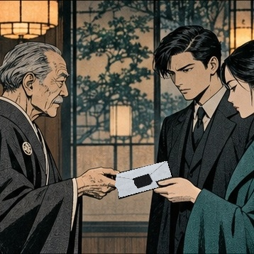
舞踏会の翌朝、これが届いたんです。
1 / 4
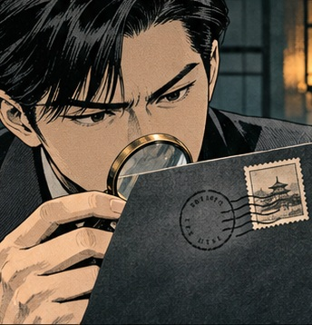
消印は土曜。差し出した日を起点にすると、決行は火曜ですね。
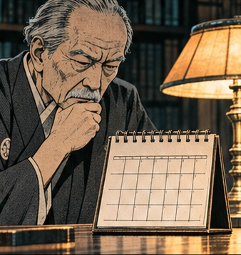
舞踏会は、消印と同じ土曜の夜でした。
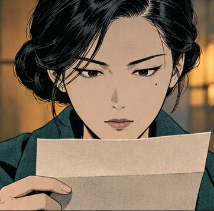
消印の日に書いたとは限らない。手紙の最初を読んで。
明日は仮面舞踏会。決行は、あさっての昨日の、そのまた翌々日。
2 / 4
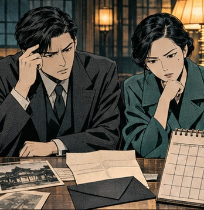
『明日』が土曜なら、これを書いた日は金曜ですね。
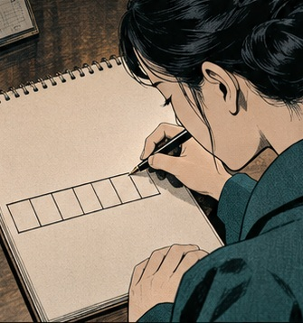
金曜を出発点にして、一つずつ数えよう。
金曜（執筆） → 土曜（舞踏会・消印） → 日曜（到着） → 月曜（決行）消印の土曜から数えた場合 → 火曜
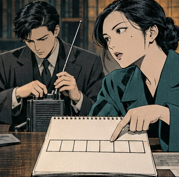
金曜のあさっては日曜。その前日、土曜から二日後。決行は月曜ね。
3 / 4
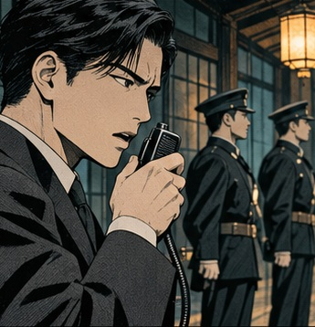
届いたのは今日、日曜。決行は明日です。門と裏口の警備をお願いします。
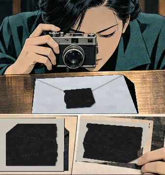
この黒い封、野鳥園にもあった。停電した屋敷の宝石盗難にも、似た記録がなかった？
月曜の夜。巡回の灯りが門柱を照らした。
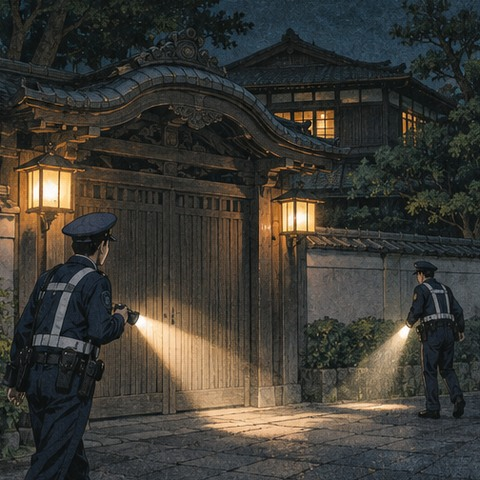
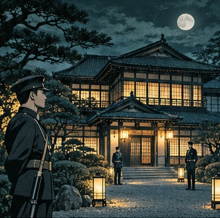
月曜の夜。警備が明けるまで、屋敷から盗まれた品はなかった。
4 / 4